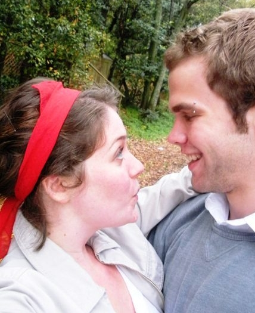

Guest Info

February 2009
The Wedding
We are having the wedding outdoors at the Lakewood Fireman's Lodge. There is an indoor area in case of weather, but we hope that it will be a rustic and informal event. The ceremony will be around dusk, with the reception to follow, so we also suggest a lightweight sweater or jacket. Check back for more details!If You're Flying
The closest airport is in Jamestown, New York, but it is usually cheaper to fly into Buffalo and then drive to Jamestown. If you would like to share a rental car with someone, just leave a note in the guest book and check for others who are looking to share as well.Hotels
We have a group-rate at the Comfort Inn (2800 North Main St. Jamestown 716-664-5920 and ask for the Warner-Hazzard Wedding Rate). There are also a few other hotels available nearby, including the Hampton Inn (4 West Oak Hill Road) and a Best Western Plus in Downtown Jamestown. If you want a luxureous experience, there is also a B&B called The Oaks (1103 West 3rd Street).Things to do in the Jamestown area:
- Chautauqua/Lake Erie Wine Trail (http://www.lakeeriewinecountry.org/) This is a great part of the country for wine-lovers, so be sure to check out some of the wineries or take the tour!- Lucille Ball - Desi Arnaz Center (http://www.lucy-desi.com/) Lucille Ball was originally from Jamestown, and the center is located in Downtown Jamestown. It has the Lucy-Desi Museum and the Desilu Playhouse. It's only $15 for admission to both, and a must-see for Lucy fans.
- Chautauqua Institution (http://www.ciweb.org/) The Institution will be closed for the season, but visitors are still welcome to browse the area and enjoy the walk through the beautiful residences. You can pass by the historic Anatheum Hotel and end up on Chautauqua Lake for a boat ride (http://www.tourchautauqua.com/).
- Ellicotville (x) The Ellicottville Brewery and shops.
- Fenton History Center in Jamestown
- Robert H. Jackson Center in Jamestown
- Peek n' Peak Resort and Spa (http://www.pknpk.com) Located only 30 minutes west of Jamestown, the resort features two golf courses, a luxury day spa, and an indoor swimming pool.